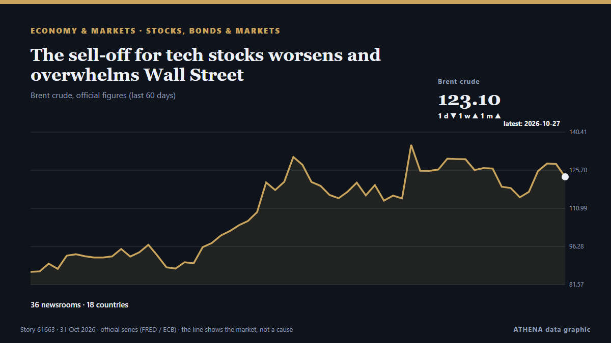

The sell-off for tech stocks worsens and overwhelms Wall Street

Unabhängig gemeldet von 37 Medien in 19 Ländern seit dem 26. Okt., zuerst von The Korea Times; die Berichterstattung flaut ab. ATHENA stuft das Risiko als erhöht ein (5.3/10), vor allem wegen der Schwere des beschriebenen Schadens und seiner geografischen und sektoralen Reichweite. Die Konfidenz liegt bei 80 % (hoch): 37 Medien bestätigen es unabhängig, bei einer mittleren Verlässlichkeit der Quellen von 74 %. Wer berichtete: 12 Medien in Vereinigte Staaten · United States, 6 Medien in Südkorea · South Korea, 5 Medien in Singapur · Singapore. Die Berichterstattung lief von 26. Okt. bis 30. Okt., über 86 Stunden.
Warum es wichtig ist: Wirtschafts- und Marktentwicklungen wirken sich auf Preise, Arbeitsplätze, Finanzierungskosten und Investitionen aus.
Was sich geändert hat: 33 neue Berichte von 24 Redaktionen in den 24 Stunden bis 31. Okt..
Erste Schlagzeile: A potentially historic drop for Alphabet's stock drags US market lower
Schlagzeilen werden auf Englisch angezeigt, wie veröffentlicht.
Auf einen Blick
Ausgewählt, bewertet und geschrieben nach der veröffentlichten Methodik von ATHENA. Kein Redakteur greift in einzelne Ereignisse ein. So entsteht ATHENA ›
| 26 Oct 15:42 UTC | 2 |
|---|---|
| 26 Oct 21:42 UTC | 0 |
| 27 Oct 03:42 UTC | 0 |
| 27 Oct 09:42 UTC | 0 |
| 27 Oct 15:42 UTC | 1 |
| 27 Oct 21:42 UTC | 0 |
| 28 Oct 03:42 UTC | 2 |
| 28 Oct 09:42 UTC | 1 |
| 28 Oct 15:42 UTC | 3 |
| 28 Oct 21:42 UTC | 1 |
| 29 Oct 03:42 UTC | 6 |
| 29 Oct 09:42 UTC | 4 |
| 29 Oct 15:42 UTC | 8 |
| 29 Oct 21:42 UTC | 13 |
| 30 Oct 03:42 UTC | 4 |
| 30 Oct 09:42 UTC | 8 |
| 30 Oct 15:42 UTC | 10 |
| 30 Oct 21:42 UTC | 5 |
| 30 Oct 00:57 UTC | 3.2 |
|---|---|
| 30 Oct 06:22 UTC | 4.1 |
| 30 Oct 10:25 UTC | 4.9 |
| 30 Oct 19:31 UTC | 5.5 |
| 31 Oct 01:10 UTC | 5.9 |
| 31 Oct 01:15 UTC | 5.3 |
Warum diese Zahlen
Bedeutung
Risiko
Konfidenz
Die Berichterstattung – wer berichtete, und wann
Schlagzeile wie veröffentlicht · öffnet das Original- The Korea Times · Südkorea · South KoreaUS stocks rise after oil prices give back some of their big gains
- The Korea Times · Südkorea · South KoreaUS stocks climb amid shaky trading in markets worldwide
- The Korea Times · Südkorea · South KoreaUS stocks tick higher as Broadcom and other AI companies lift market
- Yorkshire Post · Vereinigtes Königreich · United KingdomNew era for Econ Engineering following sale to New York Stock Exchange listed Alamo Group
- The Rio Times · Brasilien · BrazilVolaris Tops US$1B Revenue but Posts a Loss
- CNBC World · Vereinigte Staaten · United StatesOptions traders break down a massive Alphabet trade into earnings
- CNBC World · Vereinigte Staaten · United StatesFord reports mixed third-quarter results, says 2027 earnings will be in line with this year
- CNBC World · Vereinigte Staaten · United StatesAlphabet sinks 10% as it holds 2026 capex unchanged, expects significant increase in 2027
- Taipei Times · TaiwanNT dollar’s drop tied to stocks: official
- CGTN (China) · ChinaZhang Yufei, Zhang Zhanshuo shine as Asian records tumble in Beijing
- UN News · Vereinigte Staaten · United StatesHigher Ground: How New York is raising a park to hold back the sea
- Jamaica Observer · Jamaika · JamaicaNot a dollar missing
- Hindustan Times · Indien · IndiaBMC allocates ₹30 lakh per ward to revive wells amid concerns over water stock
- Times of India · Indien · IndiaPichai shares Google's Q3 numbers; while Musk says 'wow', Wall Street ‘not happy’
- Anadolu Agency (English) · Türkei · TurkeyGoogle's Russian subsidiary pays nearly $207.7M in fines imposed on US parent company
- CNBC World · Vereinigte Staaten · United StatesAlphabet tanks nearly 13% for worst day ever, losing $500 billion in value
- The Business Times · Singapur · SingaporeSingapore stocks fall amid mixed regional showing; STI down 0.03%
- Fortune · Vereinigte Staaten · United StatesRent the model. Own the harness. Own the network.
- Fast Company · Vereinigte Staaten · United StatesGoogle stock faces historic post-earnings slide: Investors rattled by search fears, negative free cash flow
- Liverpool Echo · Vereinigtes Königreich · United KingdomSouthport Market hit by £127k loss due 'worsening pressures'
- Sky News (World) · Vereinigtes Königreich · United KingdomWhy Google stock has plunged $500bn in a single day
- Ars Technica · Vereinigte Staaten · United StatesGoogle admits AI search makes less money, but it's fixing that with more ads
- The Next Web · Niederlande · NetherlandsServiceNow shares fall a record 25% after its bookings outlook misses
- CNA (Channel NewsAsia) · Singapur · SingaporeWall Street's AI bet: Own the infrastructure, collect the rent
- interest.co.nz · Neuseeland · New ZealandCurrency rates on hold
- The Korea Times · Südkorea · South KoreaA potentially historic drop for Alphabet's stock drags US market lower
- CNBC World · Vereinigte Staaten · United StatesStarbucks sales miss expectations, but its U.S. turnaround is gaining steam
- New York Times Business · Vereinigte Staaten · United StatesBig Tech’s Data Center Blitz Is Burning Through Cash and Scaring Wall St.
- The Independent · Vereinigtes Königreich · United KingdomGoogle stock price crashes and wipes $500 billion off company amid panic over AI
- Free Malaysia Today · MalaysiaWall Street ends lower as revenue misses revive AI jitters
- The Business Times · Singapur · SingaporeWall Street ends lower as Alphabet revenue miss revives AI capex jitters
- The Korea Times · Südkorea · South KoreaPotentially historic drop for Alphabet's stock drags US market lower
- Fortune · Vereinigte Staaten · United StatesAlphabet just had its worst day as a public company. BofA now values Google search at a lower multiple than fossil fuel stocks
- The Rio Times · Brasilien · BrazilArgentina Stocks Fall 1%, YPF Drops 3.1% | Argentina Market Report, Oct 29
- CNBC World · Vereinigte Staaten · United StatesIntel plunges on a major guidance miss. What went wrong — and how to proceed
- The Business Times · Singapur · SingaporeGold drops to near US$4,000 on hot inflation, tech stock sell-off
- The Business Times · Singapur · SingaporeAEM tumbles 8.6% along with Singapore and regional peers following Alphabet’s record plunge
- Ada Derana · Sri LankaGoogle value plunges by $500bn as AI fears rattle Wall Street
- The Korea Times · Südkorea · South KoreaUS dividend ETFs draw attention amid stock market volatility
- Times of India · Indien · IndiaGoogle sees its worst day in 20 years, but why it may not be alone